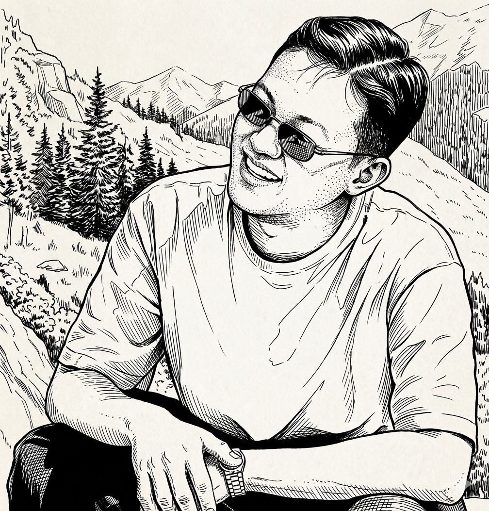

yhsien · JEN YUHSIEN
本網站經由提示詞連續導引，AI 整理生成，最後由人工修訂完稿。 This website was synthesized by AI through iterative prompt steering
and finalized through human revision.

y賢從哲學本體論出發，試圖在古典思想與現代系統工程之間搭橋。 5Q 五行煉化理論（Five-Quality Framework）是這個嘗試的具體成果—— 一套將古代五行哲學轉化為可操作診斷工具的跨學科框架。
5Q-prompt 診斷工具以 Rust 實作，使用語意模型（ONNX / Jina）對提示詞進行 五德向量分析，給出量化診斷與修復建議。 工具本身是理論的工程映射，不是概念展示。
目前研究重心：5Q 動力論（5Q-1）、觀察者效應（5Q-2）， 以及如何讓五行框架在 AI 時代保持嚴格的描述性， 而不淪為另一種模糊的心靈雞湯。
「調整的不是模型。
調整的是你。」
——這一句話，是 5Q 的核心，
也是 y賢做這件事的理由。
"It is not the model that needs adjusting.
It is you."
This is the core of 5Q,
and the reason this work exists.